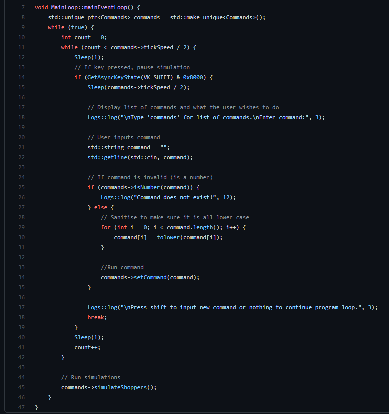
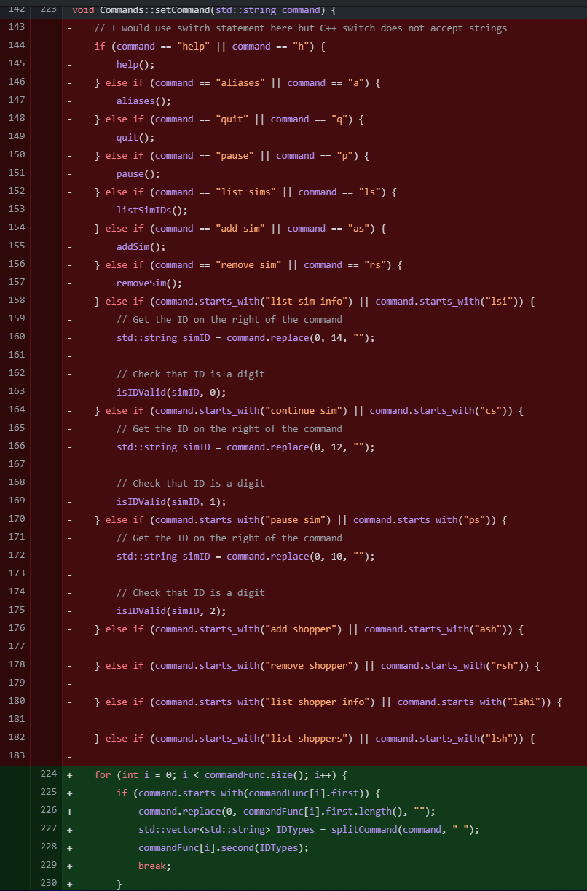
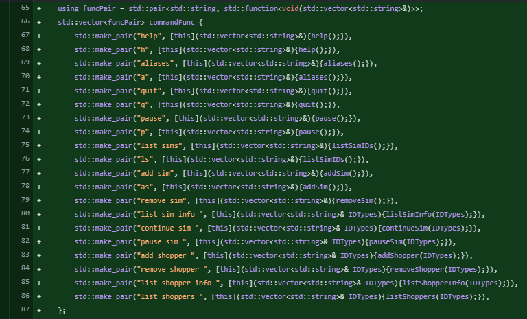
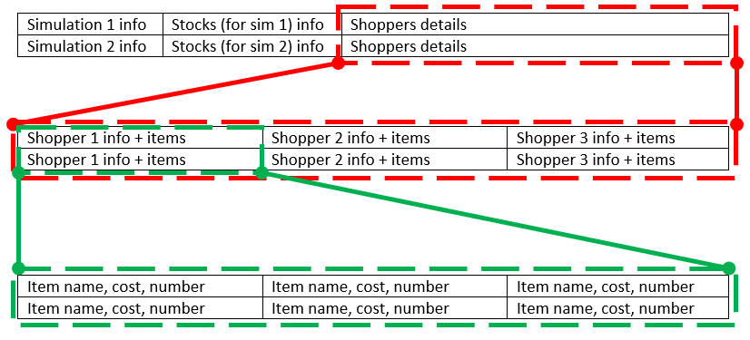
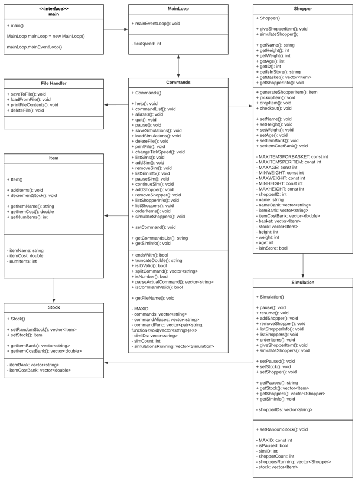
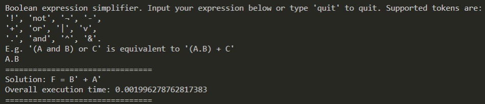
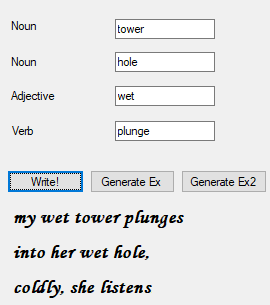

Mainframe Modernisation (2024 - Present)
My spare time outside project work is mostly spent doing a mix of things (I like to do 5 things at once and switch between them throughout the day because ADHD I guess):
- Maintaining my vscode extension which sits on zowe explorer and provides some internal developer tools to vscode (to try to remove as much reliance on the terminal as possible
- Troubleshooting with devs endless problems with zowe explorer (it's just tricky to setup, there are lots of versions that have ups and downs, people are on old versions that don't work well and don't see the messages telling them to update, etc etc)
- Doing poc's on some technology we haven't used before but would like to but no one else has time to look into
- Light development on Zowe Explorer/Zowe CLI i.e. docs changes, testing builds and attending the dev standups (actual development is done in my free time outside of work as I'm not paid to work on it)
- Working on my automation stuff if I am making changes to the batch and CICS COBOL programs that it runs for
Language Learning (2022 - Present)
In 2022 I wanted to learn a new language, so I tried Dutch for a few months but lost motivation quickly as I didn't like how it sounded. I decided to learn a completely different language than English, so I thought about Mandarin. I tried it for a couple of months but the pronunciation was too hard. So I tried Korean, having seen a Youtube video about how the alphabet is easy to learn. I learnt the alphabet in a couple of weeks and that motivated me to keep learning. As a result, I become engrossed in Korean culture and met a lot of really awesome Koreans who I met up with on my visit to Korea in 2024. As of summer 2025, my Korean language skills are roughly at the start of the intermediate level, where I can hold basic Korean conversations. In 2023 I met my partner who is Chinese and thus I started to learn Mandarin. This is also why I have visited China several times.
Deep Rock Galactic Modding (2021 - 2024)
What is Deep Rock Galactic?
Deep Rock Galactic is a 1-4 player sci-fi co-op shooter taking place in a procedurally generated and 100% destructible caves on an extremely hostile alien planet. You play as a team of badass dwarven space miners, out to complete missions for your corporate overlords and to collect as much gold, gems, and other precious minerals as you possibly can before you're overrun by hordes of enemies. To complete your tasks, you're equipped with a wide variety of severely hard-hitting weapons as well as a slew of hand gadgets. Set up turrets, call down supplies, build staircases up walls, or simply just drill your way to your objective - the choice is yours! The best bit about the game is that progression eventually comes down to beers and cosmetics!
Modding?
I was at the forefront of research and development of Unreal Engine modding for Deep Rock Galactic. I wrote documentation and guides for others to learn and follow the modding methods.

The image above depicts the Blueprint for one of my mods, called IYDRASYACH (bit of a mouthful I know, but it's based off a voiceline in the game).
I am indirectly responsible for many of the audio and Blueprint mods for DRG because I created first the written audio and blueprint modding guides, then the blueprint video tutorial series guide.
From these guides, I think I have developed a very good skill of documentation - something that unlike most people, I really enjoy doing. Teaching and helping people is one of my passions, and this definately shows when helping other DRG modders.
I have also developed a few tools for the DRG Modding scene, like helper scripts and modified a dumper for C++ reflected headers. These can be found on my alternate GitHub account.
My DRG mods
C++ Contactless Shopper Simulator (2021)
What does it do?
This is a prototype of an Object-Oriented program that simulates a contactless store, with individual shoppers, stocks, and items. Through a modular commands system, it allows the user to add as many sims as they like, and in turn as many shoppers inside selected sims as they wish. Each simulation has its own isolated stocks, which the shoppers interact with. The user can order stocks to specific simulations, remove simulations and shoppers, show specific simulation or
shopper information, and save & load simulations to external files. Because of the modularity of the commands system, new commands and features can easily be added to the program.
The original idea of the program was that it followed the same Just Walk Out shopping model that Amazon has been developing with trial shops in London. These shops enables shoppers to enter a store, buy their items and just leave without physically paying. The idea is to eliminate the whole checkout lines part of shopping, which helps bring fast and convenient checkout experiences.
Design Considerations
When designing this program, I had a couple of problems to think about. Firstly, how would the simulations run and allow user input? There were a few possible methods:
- Have the user enter either a command or nothing which then runs the simulation once. This was not great because it required user input and so could not be left to run on its own.
- The above option but use multi-threading to allow the user to inject commands whilst the simulation is running.
- The loop starts every x number of milliseconds and the user could press a key at any point which would stop the simulation and allow them to input their command.

The next problem was how to create the commands system. What I started doing originally, was having a long if... else if... chain for every command. I would use the normal switch statement... but sadly C++ does not accept strings into it. Understandably, after adding 10 commands, it started to get tedious and I was making mistakes a lot. I needed to come up with a more robust way of doing it... So I replaced it with this:

But where are all of the commands now? The great fun that is, commandFunc! This god damn beauty of a vector stores the command as the first element of a pair, and as the second element, a function that the command carries out. This is how it looked:

So now, whenever I wanted to add a new command, I could simply duplicate a line and edit the string and the function that it runs (and any parameters it may have)!
Another fun challenge to work out was how I was going to store all of the simulations, the stocks and shoppers in them, and the items that each shopper had, all in a file. Now, I could have certainly used some form of JSON, but that's boring and I wanted to work out something myself.
What I came up with, was my own spin on CSV (Comma Seperated Values) formatting. Since there were an unknown number of items/shoppers/simulations, I couldn't just seperate values with just one seperator. So what I did, was seperate each type of value with another form of seperator. Here's the main diagram showing how I planned on seperating out the data:

Here's how I used different delimiters to seperate each part:
- To split up major data (i.e. the top table), use “#”
- To split up individual data (e.g. item name and item cost), use “,”
- To split up data that may come in varying amounts (e.g. items), use “+”
- To split up items that meet shoppers (i.e. when the items end and a new shopper begins), use “:”
- To split up shoppers and their items, use “~”
Simulation ID,Paused?,money in account#Stock item name,Stock item cost,Stock number items#Shopper ID,Shopper name,Shopper age,Shopper weight,Shopper height,is shopper in store?~Item name,Item cost,Number of itemsOr:
1,0,55.2#apple,4,23+banana,1,50#1,joshua,19,45,180,1~apple,1.2,3+banana,0.8,4:2,andy,21,55,175,1~watermelon,2.3,1
Class Layout
There were a fair few commands that I wanted to implement in order to properly show off what the prototype could do once the basics classes were implemented. It took me a while to think of everything I thought I needed at the time (a lot more features could then easily be added on top), but here's the class diagram showing the relationships and the commands I had in mind:

Unreal Engine 5 Scenes (2020)
I learned and tested the new Lumen and Nanite technology from UE5 by creating a beautiful Creek scene crafted using assets off Quixel Bridge.

These houses for example were built from individual assets on Quixel Bridge - the entire houses themselves were not taken. The bridge across the creek, for example, uses the window boarding for floor planks.
As I created this project not long after UE5 went out into beta, there were still a few bugs, like materials not instancing correctly. So I had to find work arounds to these problems using my (at the time) fairly limited knowledge of the engine.
The fantastic thing I loved the most from creating this specific scene in UE5 is the realtime lighting change. You can hold Ctrl + L and use the mouse to move the sun in realtime! The shadows and the lighting changes exactly how you would expect it to change, without having to wait for any lighting to be baked at all!
Another thing I love about UE5 is its new UI. It looks SO much better than UE4's UI, and the panels are a lot more responsive and easier to manage.
Here's a couple of little demo recordings showing off the scene and the Lumen technology:
Advent of Code (2019 - 2023)
Advent of Code?
Simply put, Advent of Code is a set of 25 puzzles that release for the 25 days of Christmas in December every year. Puzzles increase in difficulty slowly as the month progresses, with Day 25 usually being the most difficult problem. Every day, the puzzle is split into two parts, where the second part always builds on top of the program you made for the first part.

Every year there is a story that progresses as each day passes, usually something to do with saving Christmas!
You can do the puzzles in whichever language you please, so in 2019 I got up to Day 13 with C#, and in 2020 I used Python. A friend of mine did each day in a different language in AoC 2020!
Every player can make a private leaderboard, or join some if they have the codes. In 2020, I was in 7 leaderboards. Points are worked out based on your rank of finishing the puzzle, where the first person gets N points (where N is the number of users on leaderboard), second gets N-1 points etc until the final gets 1. This encourages competitiveness although unfortunately it unlocks at 5am UTC (midnight where the creator lives). The good side is that by Day 10, the puzzles reach a difficulty where many people cannot finish them and so it comes about skill rather than speed (although in 2020 all the puzzles were quite easy until Day 15).

AoC 2019
The Advent of Code 2019 event was based around saving Christmas in the Solar System. The first day story context setting reads:
Santa has become stranded at the edge of the Solar System while delivering presents to other planets! To accurately calculate his position in space, safely align his warp drive, and return to Earth in time to save Christmas, he needs you to bring him measurements from fifty stars. Collect stars by solving puzzles. Two puzzles will be made available on each day in the Advent calendar; the second puzzle is unlocked when you complete the first. Each puzzle grants one star. Good luck! The Elves quickly load you into a spacecraft and prepare to launch.This sets the scene of the event quite nicely, as the story is of course very important throughout the event.
The 2019 puzzles were quite a lot more difficult than previous years, and also than 2020. Just compare these stats from both years, how few people have completed the later puzzles (even if number of solvers was taken into account, this is still a lot lower).

This event happened when I was at school, in Year 13. I completed challenges up to Day 13, although skipped Day 9, 11 and 12. I did the challenges using C#. I struggled with these puzzles somewhat because I was not really a very experienced programmer, and starting on Day 2, there was a program that subsequent odd numbered day puzzles built upon. This was called the Intcode Computer, essentially an assembly program built based on sets of rules given each puzzle. I managed to the first challenges on this using hack fixes, but eventually the rules became too complicated for me and I gave up. Maybe I will go back to them at some point.
AoC 2020
Advent of Code 2020 was a bit different, story-wise, than the other events, because it was all about getting Santa to his vacation island for a nice break from constantly saving Christmas! Although he does do some super criminal things along the way... *cough* hacking airport security, stealing passports, getting on plane without bording pass *cough*. Here's the first day story context setting:
After saving Christmas five years in a row, you've decided to take a vacation at a nice resort on a tropical island. Surely, Christmas will go on without you. The tropical island has its own currency and is entirely cash-only. The gold coins used there have a little picture of a starfish; the locals just call them stars. None of the currency exchanges seem to have heard of them, but somehow, you'll need to find fifty of these coins by the time you arrive so you can pay the deposit on your room. To save your vacation, you need to get all fifty stars by December 25th. Collect stars by solving puzzles. Two puzzles will be made available on each day in the Advent calendar; the second puzzle is unlocked when you complete the first. Each puzzle grants one star. Good luck!Many funny moments were had in this story!
This time around, I completed puzzles in Python, a language that is much easier to code these quick and short scripts in, than any typed languages. This is where the Pythonic nature really shines. You can find my Github repository for this event here. I found these puzzles a lot easier than last year, and stayed awake/woke up for 5am every day to compete with my American (and some British!) friends on my leaderboards. This has allowed me to gain some really good global ranks on most days:

The puzzles were definitley much easier than in 2019, only being actually difficult for about 5 different puzzles. On top of this, Day 25 (usually the most difficult problem of the event) was incredibly anticlimatic because it took me about 20 minutes to complete and ended up being a very short 4 liner solution.
AoC 2021
My technical writeup on Github
This year I did my puzzles in Python first, then in Unreal Engine blueprint as I wanted to learn how to code in blueprints better, for the modding stuff I was doing above.
Although blueprints are not really meant for performant coding (as we will see), it was still really fun to make it!
I finished all 25 days again this year but waking up at 5am every day for puzzle start was the last time I ever did it and it took a serious toll on my sanity!
Anyway here is my results table:

GMTK2020 - Backfire
GMTK?
Game Maker's Toolkit (GMTK) is a video game analysis series which examins and explains aspects of video game design to encourage developers to improve their crafts and viewers to appreciate the games they play more. You can find their YouTube channel here. Every year, GMTK host a big game jam on itch.io, with an increasing number of thousands of participants and submissions (5,369 entires and 143k ratings in 2020).
This year, the theme was "Out of Control". The theme could be interpreted in any way. Teams had 48 hours to create a game that could run on Windows or in browser, via any method. The majority of code had to be written during the jam but art and assets can be used within legal rights and credited. Afterwards, the games were rated by the public over a week long period, and then the top 100 rated games sent to the GMTK creator, Mark Brown, to pick his top 20.
The Creation of Backfire
For me and my 2 friends, this was our second game jam. Our first was during GMTK 2019, where we created a small game about morse code saving a sinking ship. It wasn't very good but it was the first time any of us had built anything complete in Unity (I had worked on projects before but never finished them).
So for this year, at least we had more experience with Unity, coding in general, and game design. We spent the first evening brainstorming for ideas and came up with a good few. But the best idea was the most simplistic: You shoot a bullet and it ricochets forever. That way, if you shoot too many bullets, you lose control of the level and you make things very difficult for yourself (to not get hit by your own bullet).

We decided on a top-down view, and the levels would be simple to get through - just kill all the enemies and reach the goal under a certain amount of time, without being hit by one of your own or an enemy's bullets. This ended up being quite fun. We had another of our friends make the music (he is very talented, go check him out) and another friend make the art for the main menu, level tiles, bullet, goal and character/enemy models. Overall there were 4 of us working on the project; Me and Daman56100 on programming, Senor_Saas on art & programming, and Evan on music. We all went to the same school. You can watch a short demo of me playing it here:
You can view the GMTK submission page for the game here, or the main game page here (only downloadable for Windows... sorry Linux users. We tried to get a WebGL version working but couldn't get the resolutions right). Overall, we placed 605th out of 5,300 submissions! I think that was a very good result given our lack of experience making games.
Boolean Expression Simplifier (2020)
What is this for?
This is the project that I chose to take on for my University's Term 1 Python Project. The projects could be anything of sensible scope. I chose this project because I wanted to do something mentally challenging that would solve an actual problem (and I didn't want to do a text-based adventure game that half the year was doing).
What does it do?
For another course module, I noticed that there weren't any online Boolean Expression Simplfiers that produced the Sum of Products (SOP) simplification. Therefore, I set out to create a solution that would not only solve this, but also be quick given many, many variables. This was especially important, given that the typical method to obtain a SOP simplification is through Karnaugh maps which is simple for a human to visualise and work through, but is terribly inefficient after 5 or 6 variables. Because I wanted my program to work for 10 or 20 variables, I had to use the Quine-McCluskey algorithm. I also used Petrick's method for further SOP simplification.
How does it work?
First, the user must input their expression of choice.

The program supports 4 different tokens per operation, and three operations, as you can see in the image above. They can be used interchangably. The variables don't just have to be single letters - they can be any words or digits as long as there is no space seperating them (otherwise they would cause a parse error).
Then, the program will parse the expression into an Abstract Syntax Tree (AST) that the rest of the program can then read.

In order to carry out the QM algorithm, the program must then work out the context of the variables in the truth table and whether or not each row is True or False. Using this truth table generated from the expression, the program can then generate the required minterms (prime implicants) to be grouped through the algorithm. The algorithm is then run on the minterms to work out the essential prime implicants, Petrick's method is applied to further reduce these, and the output is produced.
My Personal Website (2020)
This Website?
Yes. I created this originally for my University's Term 1 Web Dev project, but I decided that I liked the layout and kept building upon it. At the time of writing this section, I chose to complete the website and all the features I currently wanted, within just basic HTML/CSS/JS. However, in the future, I would like to use frameworks, probably React + Styled Components. If you are interested in the code used for this website, everything is open-source.

A-Level Coursework (2019)
An idle game developed in C# WinForms alongside a 65,000-word, 350-page report (Teacher grade: A*).
This project is really, really long. I absolutely love writing documentation, as you can see from the length of the documentation.
You can find the project source code + documentation here.
Haiku Generator (2018)
What is a Haiku?
Haikus are a type of poetry, originally from Japan. They must contain 17 (Japanese) syllables over 3 lines, in a 5-7-5 pattern.
How does the generator work?
The program takes in 4 inputs; 2 nouns, an adjective and a verb. The program will then use these words alongside a word bank to create the poem. Every poem generated, even with the same set of words will be different (unless you get lucky and see the exact same one twice in a row, but given the number of words to pick from those chances are very low.) The program will also automatically replace your words with words from the word bank if your word is too many syllables for the line. It will also try to keep to 17 (Japanese) syllables although is not yet perfect.

Ok... it isn't perfect... :)
BobbyBot (2018)
What is BobbyBot for?
BobbyBot is a small little bot for Discord I made in 2018. Coded in JS using discord.js, it's small and only offers a few useless but perhaps fun (for 5 minutes) commands. I used it to teach me JavaScript, JSON parsing (for the weather checker) and so I could get in on the useless Discord bot action.

Useless commands include:
- Ping checker
- Coin flipper
- Checks users' roles
- Checks users' avatar and profile info
- Weather checker
- Multiply any lengths of ints or floats together
- A super duper secret command
- A half working, half broken music player